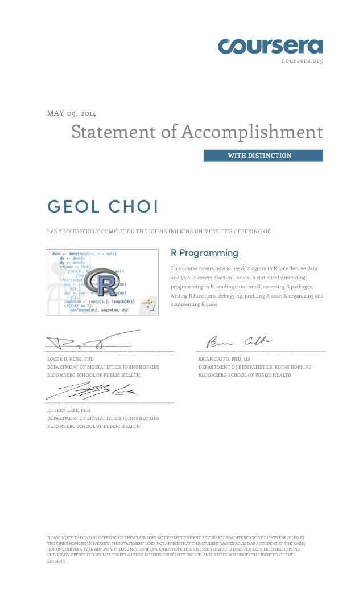

About
Who Am I?
Geol Choi (ph.D) / 최걸 / Alex Choi
Data Scientist / Deep Learning Professional / Research Scientist
Work Experiences
Vision Solution Engineer, COGNEX (2017.12 ~ Present)
Data Scientist & Software Engineer, ALPINION MEDICAL SYSTEMS (2014.06 ~ 2017.11)
Computer Graphics Researcher, CJ POWERCAST (2012.04 ~ 2014.03)
Computer Vision & VR/AR Researcher, ETRI (2010.04 ~ 2012.03)
Research Experiences
Education
Nano Degree
R Programming, Coursera (Johns Hopkins Univ.), 2014

Deep Neural Networks with PyTorch, Coursera (IBM), 2020
Ph.D, Mechanical Engineering Dept. from KAIST, 2010
BS, Mechanical Engineering Dept. from Chung-Ang Univ., 2003
Interests
General Machine Learning & Deep Learning
Convolutional Neural Networks (CNN)
Deep Generative Models (GANs)
Computer Vision / Machine Vision / Visual Recognition
Data Science / Data Analytics / Data Visualization
Computer Graphics
Realtime Web Applications
Scientific Computing / Parallel Computing
Languages
Korean: Native
English: Proficiency
German: Intermediate
Japanese: Basic
Chinese: Novice(HSK Level3)
Skills
Machine & Deep Learning
Related Theories and Algorithms: Probability, Statistics, Optimization, etc.
Multi-layer Perceptron
Convolutional Neural Networks (CNN)
Recurrent Neural Networks (RNN)
Generative Models (GANs, VAEs)
Deep Learning Frameworks (Order of Frequently Used Frameworks)
PyTorch
TensorFlow / Keras
CNTK
MXNet with Gluon
Data Science
Python(pands)/R
SQL/NoSQL
Data Wrangling
Data Analytics
Data Mining
Data Visualization (matplotlib, ggplot, plotly, bokeh, etc.)
MongoDB
PostresSQL
MySQL
Firebird
Programming Languages (Order of Skillful Languages)
C/C++
Python
R
JavaScript
C#
Matlab
Java
Computer Vision
General Image Processing Algorithms (filters, etc.)
Conventional & Deep Learning based CV Theories & Algorithms
Object Detection
Algorithms: YOLO, SSD, R-CNN, Fast R-CNN, Faster R-CNN, Selective Search, FPN, etc.
Tools: Detectron2, TensorFlow Object Detection Module
Segmentation: Mask R-CNN, FCN, U-Net, etc.
Mixed Reality / Augmented reality
OpenCV (C++ / Python / C#)
Cloud Computing
Amazon Web Services (AWS)
Google Cloud Platform (GCP)
Google Colab (Social Coding)
Web Development
Basic Web Document Concepts: HTML5 / CSS / JavaScript
Server-side: Node.jS, PHP
Client-side: ReactJS, AngularJS, jQuery
Other Web Technologies: WebGL / WebRTC / WebSocket
Web Frameworks: React
Scientific Computing
CUDA Parallel Computing
Realtime Fluid Simulation
Finite Element Analysis (FEA)
Boundary Element Analaysis (BEA)
Computer Graphics
General Computer Graphics Theroies & Algorithms
Rendering Theories: Global Illumination, Path Tracing, Ray Tracing
Particle Simulation
Tools: Maxon Cinema 4D, Adobe Photoshop & AfterEffects, NextLimit RealFlow, SideEffects Houdini, E-on Software Vue
Publications
Doctoral Thesis
International Conferences
Application of Isogeometric Analysis to Shape Optimal Design of Thermal Problems, 8th World Congress on Structural and Multidisciplinary Optimization, Lisbon, Portugal, 2009.
Structural shape optimization based on isogeometric analysis with control weights, International Congress of Theoretical and Applied Mechanics, Adelaide, Australia, 2008.
Structural shape optimization using shape design sensitivity of NURBS control weights, CJK-OSM 5, Cheju, Korea, 2008.
Structural shape optimization using extended finite element method on boundary representation by NURBS, 7th World Congress on Structural and Multidisciplinary Optimization, Seoul, Korea, 2007.
Imposing essential and natural boundary conditions on geometric boundaries for X-FEM, CJK-OSM 4, Kumming, China, 2006.
Student Symposium
Bone growth simulation based on topology optimization, KAIST-Michigan Univ. Joint Symposium, University of Michigan, Ann Arbor, USA, 2006.
Articles